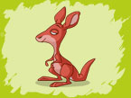
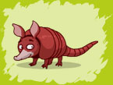
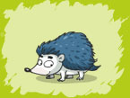

Squirrel
A squirrel is one of many small or medium-sized rodents in the family Sciuridae. Squirrels' diet consists primarily of a wide variety of plant food, including nuts, seeds, conifer cones, fruits, fungi and green vegetation. Squirrels are generally clever and persistent animals. In residential neighborhoods, they are notorious for eating out of bird feeders, digging in planting pots and flower beds to pull out bulbs which they chew on or to either bury or recover seeds and nuts and for inhabiting sheltered areas including attics and basements. Squirrels use their keen sense of smell to locate buried nuts and can dig extensive holes in the process. They are also very good at climbing and jumping from tree to tree.
|
Hare
Hares and jackrabbits are small leporids belonging to the genus Lepus. Hares are very fast-moving. The hare can run at speeds of up to 72 km/h (45 mph). They live solitarily or in pairs, while a "drove" is the collective noun for a group of hares. Normally a shy animal, the Hare changes its behavior in spring, when hares can be seen in broad daylight chasing one another around meadows; this appears to be competition between males to attain dominance (and hence more access to breeding females). During this spring frenzy, hares can be seen "boxing"; one hare striking another with its paws (probably the origin of the term "mad as a March hare"). For a long time it had been thought that this was inter-male competition, but closer observation has revealed that it is usually a female hitting a male, either to show that she is not yet quite ready to mate, or as a test of his determination.
|
Beaver
Beavers are known for their natural trait of building dams in rivers and streams, and building their homes (known as "lodges") in the resulting pond. Beavers also build canals to float build materials that are difficult to haul over land. They use powerful front teeth to cut trees and plants that they use for building and for food. In the absence of an existing pond a Beaver has to construct a dam before building his lodge. First they place vertical poles and then fill between the vertical poles with a crisscross of horizontally placed branches. They fill in the gaps between the branches with a combination of weeds and mud until the dam holds back sufficient water to surround the lodge.
Beavers have webbed hind-feet, and a broad, scaly tail. They have poor eyesight, but keen senses of hearing, smell, and touch.
They are known for their "danger signal": when startled or frightened, a swimming beaver will rapidly dive while forcefully slapping the water with its broad tail. This creates a loud "slap," audible over great distances above and below water. This noise serves as a warning to beavers in the area. Once a beaver has made this danger signal, nearby beavers dive and may not reemerge for some time. Beavers are slow on land, but good swimmers that can stay under water for as long as 15 minutes. (Wilson, 1971) Rarely does a frightened beaver attack a human.
Beavers continue to grow throughout life. Adult specimens weighing over 25 kg (55 lb) are not uncommon. Females are as large as or larger than males of the same age, which is uncommon among mammals.
|
Raccoon
The raccoon is a medium-sized mammal native (on earth) to North America. Their original habitats are forests, but due to their adaptability they have extended their range to mountainous areas, coastal marshes, and even urban areas.
Raccoon's body length is 41 to 72 cm (16.1–28.0 in) and their weight is 3.6 to 9.0 kg (7.9–19.8 lb), The dense underfur, which insulates against cold weather, accounts for almost 90% of its grayish coat. Two of the most distinctive features of the raccoon are its extremely sensitive front paws and facial mask, which are also themes in the mythology of several Native American tribes. Studies have shown that raccoons are able to remember the solution to tasks up to three years later. Raccoons are omnivorous and usually nocturnal, and their diet consists of invertebrates, plant foods vertebrates. Raccoons sometimes wash their food before eating it.
Though previously thought to be solitary, there is now evidence that raccoons engage in gender-specific social behaviors. Related females often share a common area, while unrelated males live together in groups of up to four animals to maintain their positions against foreign males during the mating season and other potential invaders. After a gestation period of about 65 days, two to five young are born in spring. The kits are subsequently raised by their mother until dispersion in late fall. Although captive raccoons have been known to live over 20 years, their average life expectancy in the wild is only 1.8 to 3.1 years. Hunting and traffic accidents are the two most common causes of death in many areas.
|
Red Fox
A fox is an animal belonging to small to medium-sized canids, characterized by possessing a long, narrow snout, and a bushy tail, or brush. By far the most common and widespread species of fox is the red fox (Vulpes vulpes),
In the wild foxes can live for up to 10 years, but most foxes only live for 2 to 3 years due to hunting, road accidents and diseases. Dogs (male foxes) weigh on average, 5.9 kilograms (13 lb) and vixens (female foxes) weigh less, at 5.2 kilograms (11.5 lb). Fox-like features typically include an acute muzzle (a "fox face") and bushy tail.
Unlike many canids, foxes are not usually pack animals. Typically, they are solitary, opportunistic feeders that hunt live prey (especially rodents). Using a pouncing technique practiced from an early age, they are usually able to kill their prey quickly. Foxes also gather a wide variety of other foods ranging from grasshoppers to fruit and berries.
The diet of foxes is largely made up of invertebrates. However, it also includes rodents, rabbits and other small mammals, reptiles, (such as snakes), amphibians, grasses, berries, fruit, fish, birds, eggs, and all other kinds of small animals. Most species of foxes generally consume around 1 kg of food every day. Foxes cache excess food, burying it for later consumption, usually under leaves, snow, or soil.
|

Kangaroo
A kangaroo is a marsupial from the family Macropodidae (macropods, meaning 'large foot'). Kangaroos (on earth) can only be found in Australia. Kangaroos have large, powerful hind legs, large feet adapted for leaping, a long muscular tail for balance, and a small head. Like all marsupials, female kangaroos have a pouch called a marsupium in which joeys complete postnatal development. Kangaroos are the only large animals to use hopping as a means of locomotion. The comfortable hopping speed for Red Kangaroo is about 20–25 km/h (13–16 mph), but speeds of up to 70 km/h (44 mph) can be attained, over short distances, while it can sustain a speed of 40 km/h (25 mph) for nearly two kilometres. This fast and energy-efficient method of travel has evolved because of the need to regularly cover large distances in search of food and water, rather than the need to escape predators.
Because of its long feet, a kangaroo cannot walk correctly. To move at slow speeds, it uses its tail to form a tripod with its two forelimbs. It then raises its hind feet forward, in a form of locomotion called "crawl-walking.
The average life expectancy of a kangaroo is about 4–6 years.
The Kangaroo is a grazer eating a wide variety of grasses and sometimes include significant amounts of shrubs in the diet.
Usually only one young is born at a time. It is blind, hairless and only a few centimeters long; its hind legs are mere buds but uses its better developed forelegs to haul its way through the thick fur on its mother's abdomen in to the pouch, which takes about three minutes. Once there, it fastens on to one of four teats and starts to feed. After 190 days, the baby (called a joey) is sufficiently large and independent to make its first foray out of the pouch. From then on it spends increasing time in the outside world and eventually, after 235 days, it leaves the pouch for the last time.
|
Panda
The Giant Panda is a bear native to central-western and southwestern China (on earth). It is easily recognized by its large, distinctive black patches around the eyes, over the ears, and across its round body. Though belonging to the order Carnivora, the Giant Panda has a diet which is 99% bamboo. The Giant Panda may eat other foods such as honey, eggs, fish, yams, shrub leaves, oranges, and bananas when available. Giant Panda is a conservation reliant endangered species. It is estimated that around 1,590 pandas are currently living in the wild. Adult Pandas measure around 1.5 m long and around 75 cm tall, at the shoulder. Males are 10-20% larger than females. Males can weigh up to 150 kg (330 pounds). Females are generally smaller than males, and can occasionally weigh up to 125 kg (275 pounds).[2] The Giant Panda lives in mountainous regions.
The Giant Panda has a body shape typical of bears. It has black fur on its ears, eye patches, muzzle, legs, and shoulders. The rest of the animal's coat is white. Although scientists do not know why these unusual bears are black and white, some speculate that the bold coloring provides effective camouflage into its shade-dappled snowy and rocky surroundings. The Giant Panda's thick, wooly coat keeps it warm in the cool forests of its habitat. The Giant Panda has large molar teeth and strong jaw muscles for crushing tough bamboo.
The Giant Panda can usually live to be 25-30 years old in captivity.
In the wild, the Giant Panda is a terrestrial animal and primarily spends its life roaming and feeding in the bamboo forests. Though generally alone, each adult has a defined territory and females are not tolerant of other females in their range. Pandas communicate through vocalization and scent marking such as clawing trees or spraying urine. The Giant Panda is able to climb and take shelter in hollow trees or rock crevices but does not establish permanent dens. For this reason, pandas do not hibernate, and will instead move to elevations with warmer temperatures.
Social encounters occur primarily during the brief breeding season in which pandas in proximity to one another will gather. After mating, the male leaves the female alone to raise the cub.
Because of the synchronous flowering, death, and regeneration of all bamboo within a species, the Giant Panda must have at least two different species available in its range to avoid starvation. While primarily herbivorous, the Giant Panda will eat meat, fish, and eggs when available.
|
Tiger
The tiger (Panthera tigris) is a member of the Felidae family; the largest of the four "big cats" in the genus Panthera. Reaching up to 4 meters (13 ft) in total length and weighing up to 300 kilograms (660 pounds), Aside from their great bulk and power, their most recognizable feature is the pattern of dark vertical stripes that overlays near-white to reddish-orange fur, with lighter under parts. The largest subspecies of tiger is the Siberian tiger.
Tigers are essentially solitary and territorial animals. The size of a tiger's home range mainly depends on prey abundance, and, in the case of male tigers, on access to females. A tigress may have a territory of 20 square kilometres while the territories of males are much larger, covering 60–100 km2. The ranges of males tend to overlap those of several females. The relationships between individuals can be quite complex, and it appears that there is no set "rule" that tigers follow with regards to territorial rights and infringing territories. For instance, although for the most part tigers avoid each other, both male and female tigers have been documented sharing kills. Contrast to male lions, male tigers will allow the females and cubs to feed on the kill first. Furthermore, tigers seem to behave relatively amicably when sharing kills, in contrast to lions, which tend to squabble and fight. Unrelated tigers have also been observed feeding on prey together. When young female tigers first establish a territory; they tend to do so fairly close to their mother's area. The overlap between the female and her mother's territory tends to wane with increasing time. Males, however, wander further than their female counterparts, and set out at a younger age to eke out their own area. A young male will acquire territory either by seeking out a range devoid of other male tigers, or by living as a transient in another male's territory, until he is old and strong enough to challenge the resident male. The highest mortality rate (30-35% per year) amongst adult tigers occurs for young male tigers who have just left their natal area, seeking out territories of their own.
Male tigers are generally more intolerant of other males within their territory than females are of other females. For the most part, however, territorial disputes are usually solved by displays of intimidation, rather than outright aggression.
In the wild, tigers mostly feed on larger and medium sized animals. Adult elephants are too large to serve as common prey, but conflicts between tigers and elephants do sometimes take place. A case where a tiger killed an adult Rhinoceros has been observed. Young elephant and rhino calves are occasionally taken.
Tigers usually hunt at night. They generally hunt alone and ambush their prey as most other cats do, overpowering them from any angle, using their body size and strength to knock large prey off balance. Even with their great masses, tigers can reach speeds of about 49-65 kilometres per hour (35-40 miles per hour), although they can only do so in short bursts, since they have relatively little stamina; consequently, tigers must be relatively close to their prey before they break their cover. Tigers have great leaping ability; horizontal leaps of up to 10 meters have been reported, although leaps of around half this amount are more typical. However, only one in twenty hunts ends in a successful kill.
|

Armadillo
Armadillos are small placental mammals, known for having a leathery armor shell. Armadillos are excellent diggers. Many species use their sharp claws to dig for food, such as grubs, and to dig dens. The Armadillo prefers to build burrows in moist soil near the creeks, streams, and arroyos around which it lives and feeds. The diet of different armadillo species varies, but consists mainly of insects, grubs, and other invertebrates. Some species, however, are almost entirely formicivorous (feeding mainly on ants) Armadillos have poor vision. Their armor is formed by plates of dermal bone covered in relatively small, overlapping epidermal scales called "scutes", composed of bone with a covering of horn. The underside of the animal is never armored, and is simply covered with soft skin and fure.
Most armadillos escape predators by fleeing (often into thorny patches, from which their armor protects them) or digging to safety. Only the South American three-banded armadillos rely heavily on their armor for protection. When threatened by a predator, this species frequently roll up into a ball. Other armadillo species cannot roll up because they have too many plates. The North American Nine-banded Armadillo tends to jump straight in the air when surprised, and consequently often collides with the undercarriage or fenders of passing vehicles.
Armadillos have short legs but can move quite quickly, and have the ability to remain underwater for as long as six minutes. Because of the density of its armor, an armadillo will sink in water unless it inflates its stomach and intestines with air, which often doubles its size and allows it to swim across narrow bodies of water.
|

Hedgehog
A hedgehog is any of the spiny mammals of the subfamily Erinaceinae and the order Erinaceomorpha. Hedgehogs have changed little over the last 15 million years. Like many of the first mammals they have adapted to a nocturnal, insectivorous way of life.
Hedgehogs are easily recognized by their spines, which are hollow hairs made stiff with keratin. Their spines are not poisonous or barbed and, unlike the quills of a porcupine, cannot easily be removed from the hedgehog. However, spines normally come out when a hedgehog sheds baby spines and replaces them with adult spines. This is called "quilling." When under extreme stress or during sickness, a hedgehog can also lose spines. A defense that all species of hedgehogs possess is the ability to roll into a tight ball, causing all of the spines to point outwards.
All hedgehogs are primarily nocturnal; the hedgehog sleeps for a large portion of the daytime either under cover of bush, grass, rock or in a hole in the ground. All wild hedgehogs can hibernate. Hibernation depends on temperature, species, and abundance of food .Hedgehogs are fairly vocal, and communicate not only in a series of grunts and snuffles, but sometimes in loud squeals.
Similar to opossums, mice, and moles, hedgehogs have some natural immunity against snake venom.
Hedgehogs feed on insects, snails, frogs and toads, snakes, bird eggs, carrion, mushrooms, grass roots, berries, melons, and watermelons.
|